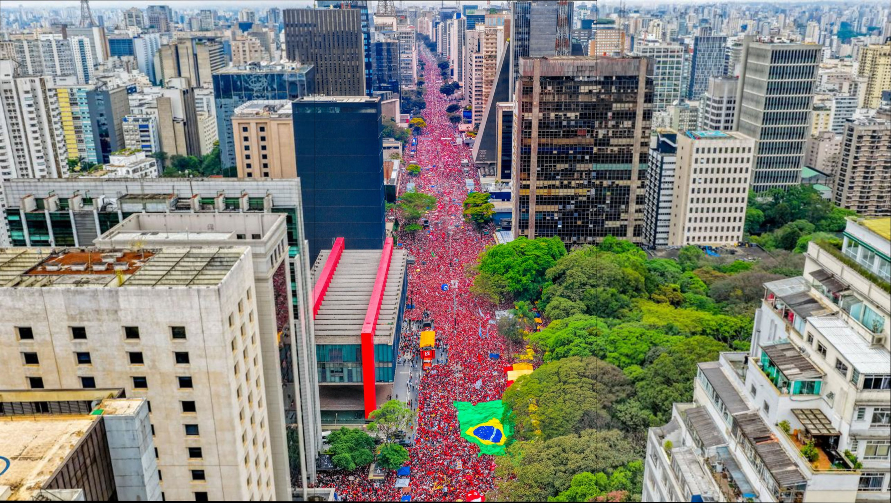
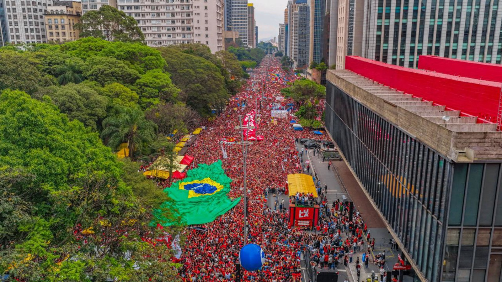
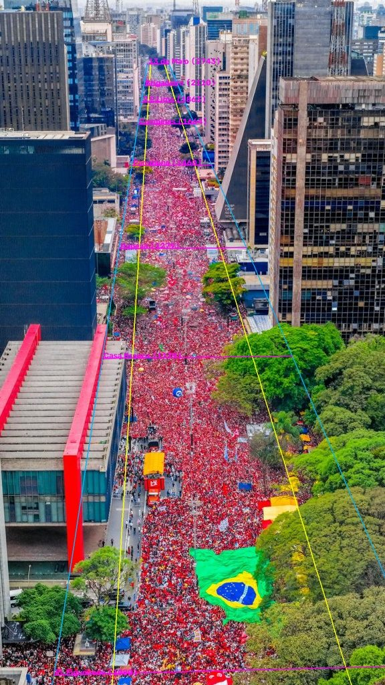
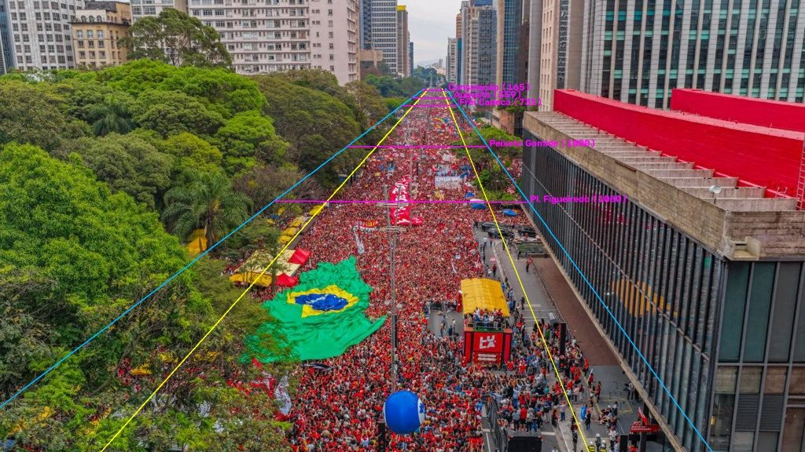
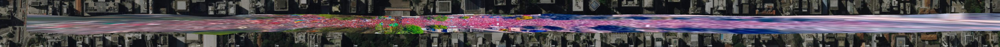

Estudo de caso nº 1 · publicado em 12/10/2026 · método v1.0
Avenida Paulista, 11 de outubro de 2026
Aplicamos o método passo a passo ao ato realizado no domingo na Avenida Paulista, em São Paulo, usando apenas fotos com licença aberta. Mostramos o que foi possível medir, o que não foi e por quê.
Contexto
O ato, chamado pelos organizadores de "Marcha pela Democracia", ocorreu duas semanas antes do segundo turno da eleição presidencial, com o carro de som em frente ao MASP. As estimativas divulgadas divergem: os organizadores anunciaram 1 milhão de participantes, a imprensa noticiou "milhares" e nenhum órgão oficial divulgou contagem. O Monitor do Debate Político (USP) e a More in Common informaram que não puderam estimar o público porque o sobrevoo com drone, necessário ao seu método, não foi autorizado. (Metrópoles, Agência Brasil, Diário do Grande ABC.)
1Fotos e proveniência
Fizemos uma busca no Flickr e no Wikimedia Commons por fotos tiradas em 11/10/2026 com licença que permite redistribuição. A única fonte encontrada foi o álbum oficial da campanha (43 fotos, Ricardo Stuckert, CC BY-SA 4.0). Fotos de agências e jornais não têm licença aberta e por isso não são reproduzidas aqui.
2Registro: duas vistas, dois mosaicos
As 6 fotos aéreas usadas no exemplo formam dois grupos: um drone olhando para o Paraíso (MASP à esquerda) e outro olhando para a Consolação (MASP à direita). Dentro de cada grupo, o registro encontrou de 314 a 2.342 correspondências consistentes por par, e as fotos foram unidas sem duplicar regiões. Entre os grupos não há sobreposição (os sentidos são opostos), o que o método reconhece.


3Projeção no mapa: a avenida inteira vista de cima
Para ver toda a extensão da Paulista numa só imagem, em escala, projetamos as fotos oblíquas sobre a ortofoto 2020 da Prefeitura de São Paulo (GeoSampa, ≈10–20 cm por pixel, licença CC BY-SA 4.0). Não usamos imagens do Google Maps, cujos termos proíbem derivar dados das imagens. Os satélites do INPE (CBERS-4A, 2 m por pixel) são gratuitos, mas grosseiros demais para marcar faixas e meios-fios. Servem de alternativa para cidades sem ortofoto municipal.
Na ferramenta, a projeção é feita marcando pontos de controle (o mesmo ponto do chão na foto e no mapa). Aqui, porém, a multidão cobre quase todo o chão. Por isso usamos uma técnica clássica de fotogrametria, a calibração por pontos de fuga:
- As arestas verticais dos prédios convergem num ponto de fuga vertical (detecção automática de segmentos + RANSAC).
- As bordas da multidão (vista 1) e as arestas longas da fachada do MASP (vista 2), paralelas à avenida, convergem no ponto de fuga da avenida.
- Os dois pontos de fuga dão a distância focal e a orientação da câmera. A largura do carro de som (3,0 m) dá a escala (altura da câmera), e um ponto conhecido do chão dá a posição: a base do pilar noroeste do MASP na vista 1, e a traseira do caminhão, localizada pela vista 1 somando os 19,7 m de comprimento, na vista 2.
| Vista | Focal | Altura da câmera | Posição | Inclinação |
|---|---|---|---|---|
| 1 (para o Paraíso) | 2.894 px | ≈ 63 m | ≈ 100 m antes do MASP | 18° abaixo do horizonte |
| 2 (para a Consolação) | 1.629 px | ≈ 18 m | junto à ponta sudeste do MASP | 13° abaixo do horizonte |
Verificações independentes: na vista 1, a borda da multidão junto ao MASP cai a 2,7 m do eixo de referência, onde fica o meio-fio na ortofoto (2 m), e as ruas Plínio Figueiredo e Casa Branca caem nas duas pontas do MASP. A frente e a traseira do caminhão medidas na foto distam 17,6 m, contra 19,7 m da placa. Na vista 2, a linha a 8 m do eixo acompanha a base da fachada do MASP, e a câmera está na altura do topo do MASP, que de fato aparece quase de perfil, junto ao horizonte.


Com os dois modelos, as 6 fotos (as demais herdam o modelo pela homografia do registro) foram projetadas sobre o mapa e recortadas às zonas da avenida. Abaixo, a Paulista "endireitada" da Consolação (esquerda) ao Paraíso (direita), com a ortofoto ao fundo:

4Área: medida no OpenStreetMap
- Comprimento: o eixo da avenida tem 2.745 m no OpenStreetMap, com os cruzamentos localizados pelo próprio mapa (Consolação a 165 m, Augusta a 559 m, MASP a ≈1.150 m, Joaquim Eugênio de Lima a 1.863 m, Brigadeiro a 2.110 m).
- Largura: medimos a distância entre fachadas a cada 10 m, usando os contornos dos prédios no OSM (161 medições): mediana de 50,3 m (metade das medições entre 45 e 61 m). Adotamos 45 m ± 15% para descontar recuos privados, bancas, canteiros e o carro de som.
Dividimos a avenida em 6 zonas, do núcleo (MASP ± 250 m) às pontas, totalizando 114.856 m² entre a Consolação e o Paraíso.
5Densidade: o que deu e o que não deu para medir
O plano ideal era medir a densidade em amostras, usando como referência o carro de som, que exibe a placa "LARGURA 3,00 m · COMPRIMENTO 19,70 m". A largura de 3,0 m corresponde a ≈119 pixels na foto, ou seja, ≈40 px por metro. Isso funcionou para a escala. A contagem é que falhou:
- Contagem manual difícil, mas possível junto ao palanque: na maior parte das fotos cada pessoa ocupa poucos pixels e a compressão JPEG forma blocos de 8×8 pixels. Nas fotos mais próximas do carro de som, porém, uma grade de contagem com células de 1 m projetadas no chão (pela homografia da etapa 3) permite marcar cabeça por cabeça. Ali, 1 m corresponde a ≈100 px na horizontal, e uma cabeça a ≈20–30 px (≈0,2–0,3 m), o que confere a escala.
- IA implausível: nas amostras junto ao caminhão, a IA indicou entre 9 e 15 pessoas/m², acima do limite físico (≈6/m²). Mãos levantadas, bandeiras e o tratamento HDR provavelmente foram contados como cabeças.
- Teste de escala reprovado: o total da IA muda muito conforme a resolução de processamento (tabela abaixo), sinal de que o modelo não está "enxergando" as pessoas nessas fotos panorâmicas.
| Foto (Flickr id) | 0,5× | 1× | 2× | Diagnóstico |
|---|---|---|---|---|
| 55581805947 (panorâmica) | 50 | 692 | 3.516 | instável |
| 55582830431 (aérea alta) | 556 | 4.344 | 11.562 | instável |
| 55583249180 (aérea alta) | 1.008 | 5.618 | 14.004 | instável |
| 55583675910 (aérea média) | 2.689 | 6.907 | 11.203 | instável |
| 55583639030 (aérea próxima) | 1.784 | 2.638 | 2.731 | estável (1×–2×) |
DM-Count com pesos UCF-QNRF, mesmo modelo do site. Apenas a foto mais próxima tem contagem estável, e ela mostra só uma fração do núcleo.
Contagem com a grade junto ao palanque
O mesmo trecho de 5 × 5 m, ao lado do carro de som, foi contado em duas fotos:
| Foto (Flickr id) | Área | Cabeças | Densidade |
|---|---|---|---|
| 55583675910 (aérea média) | 25 m² | 124 | 4,96/m² |
| 55583639030 (aérea próxima) | 25 m² | 46 | 1,84/m² |
A diferença entre as duas fotos do mesmo lugar mostra quanto a contagem depende do ângulo, da nitidez e de cabeças escondidas atrás de outras. Há ainda um viés para baixo: as cabeças estão ≈1,6 m acima do chão e, com a câmera a ≈18 m, projetá-las no chão espalha as pessoas por uma área ≈20% maior. Gente sob árvores e bandeiras não aparece na contagem, mas está incluída na área das zonas.
Com isso, o núcleo recebe 3 · 4 · 5 pessoas/m²: abaixo do ponto mais denso junto ao palanque, porque a zona tem 500 m. As demais zonas não puderam ser medidas (as fotos têm menos de 3 px/m nesses trechos) e recebem valores decrescentes ao se afastar do MASP, por comparação visual, com faixas largas:
| Zona | Área (m²) | Densidade mín · provável · máx | Base |
|---|---|---|---|
| Núcleo: MASP ± 250 m | 22.499 | 3 · 4 · 5 | contagem com grade junto ao palanque (1,8 e 5,0/m²) |
| Augusta → núcleo | 15.332 | 2 · 3 · 4 | ocupação contínua da pista e das calçadas |
| Núcleo → J. E. de Lima | 20.831 | 2 · 3 · 4 | ocupação contínua |
| Consolação → Augusta | 17.726 | 1 · 2 · 3 | visível ao fundo; observação de campo: ≈2/m² em frente à estação Paulista do metrô |
| J. E. de Lima → Brigadeiro | 11.115 | 1 · 2 · 3 | visível ao fundo, densidade incerta |
| Brigadeiro → Paraíso | 27.353 | 0,5 · 1,2 · 2 | no limite do horizonte |
Observações de campo do autor, que esteve no ato: ≈2 pessoas/m² em frente à estação Paulista do metrô e multidões também nas ruas transversais. Sem horário nem foto, entram como apoio, não como medição. Se você tem fotos desses trechos com licença aberta, elas podem virar amostras.
6Resultado e incerteza
Só o núcleo tem contagem; as outras zonas dependem de julgamento visual. Por isso a faixa é larga. Ela mostra o tamanho real da nossa ignorância, e não uma precisão que não temos.
Cenários de extensão
| Cenário | Área (m²) | Estimativa pontual |
|---|---|---|
| A. Só Augusta → J. E. de Lima (núcleo + entorno) | 58.662 | ≈ 198 mil |
| B. Consolação → Paraíso (adotado) | 114.856 | ≈ 289 mil |
| C. B com largura total de fachada a fachada (50 m) | 127.618 | ≈ 321 mil |
Checagem física
A Avenida Paulista inteira, com 2,75 km × 50 m (≈137 mil m²), comportaria cerca de 550 mil pessoas a 4 pessoas/m² (multidão muito apertada) e cerca de 820 mil a 6 pessoas/m² (esmagamento). Portanto, 1 milhão de pessoas ao mesmo tempo não cabe fisicamente na avenida. Números desse porte só seriam possíveis contando ruas vizinhas ou o total de pessoas que passaram ao longo do dia (rotatividade), algo que fotos de um instante não medem. Essa checagem vale para qualquer estimativa anunciada para a Paulista, por qualquer grupo. A estimativa adotada (mediana ≈290 mil, densidade média ≈2,5/m²) fica abaixo da capacidade da avenida. Ela também fica acima das contagens independentes divulgadas (USP ≈204 mil, Poder360 ≈228 mil), e a diferença se explica pelas densidades atribuídas fora do núcleo, onde não houve medição.
Limitações e como melhorar
- Sem fotos verticais (do alto, tipo "nadir") em alta resolução, não há contagem individual. Esse é o insumo que o método do Monitor do Debate Político usa e que não esteve disponível.
- As fotos são de uma única fonte, interessada no resultado. Fotos independentes, de imprensa ou de cidadãos, com horário registrado, permitiriam amostras de densidade melhores. Se você tem fotos aéreas do ato e pode liberá-las sob licença aberta, a análise pode ser refeita.
- Ruas transversais não incluídas: segundo observação de campo do autor, elas também tinham multidões. Como não há fotos desses trechos, eles não entram nas zonas, e a estimativa é conservadora nesse ponto.
- Fora do núcleo, as densidades não foram medidas. Fotos próximas de outros trechos da avenida permitiriam usar a grade de contagem neles também.
- A estimativa vale para o momento das fotos, não para o dia todo. O horário exato de captura é desconhecido: os arquivos só trazem a data de edição no Lightroom (vários têm o mesmo segundo, 14:03:12, e duas fotos da vista 2 marcam 17:05 e 17:24). Por isso, os mosaicos podem juntar momentos diferentes.
Reproduza
- Abra o relatório na ferramenta e altere qualquer largura ou densidade.
- Carregue as "fotos de exemplo" na etapa 1 e rode o registro e a IA no seu navegador.
- Na etapa "Projeção no mapa", os pares de controle deste estudo já vêm no relatório. Escolha 0,3 px/m, marque "recortar às zonas" e gere o ortomosaico. Você também pode apagar os pares e marcar os seus sobre a ortofoto.
- Confira os scripts em python/ (coleta com proveniência, registro e exportação do modelo).